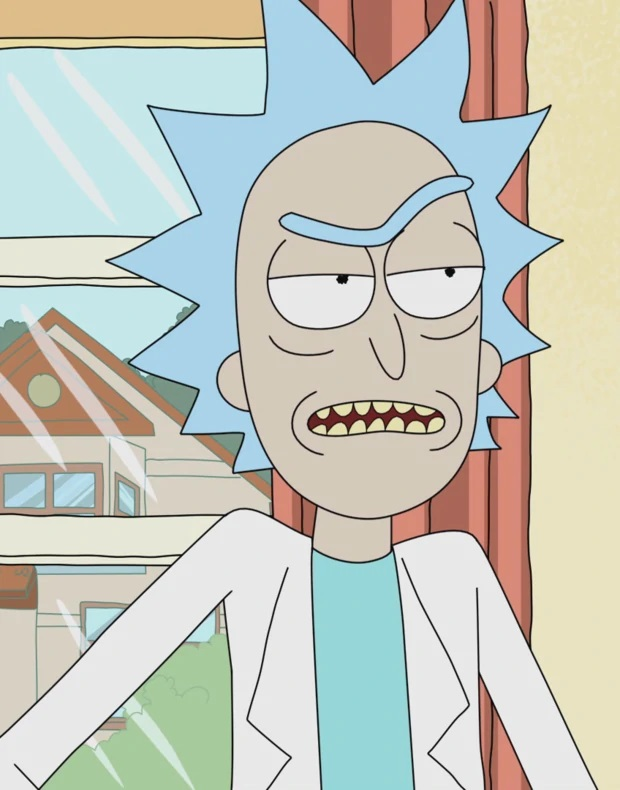
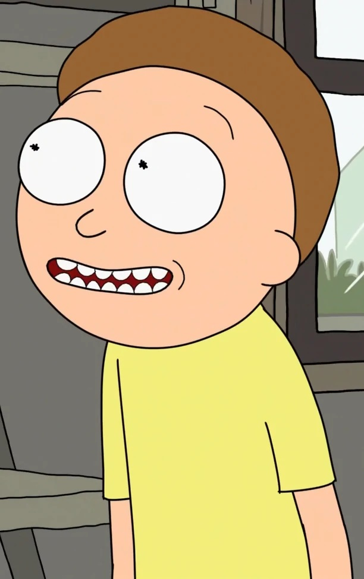
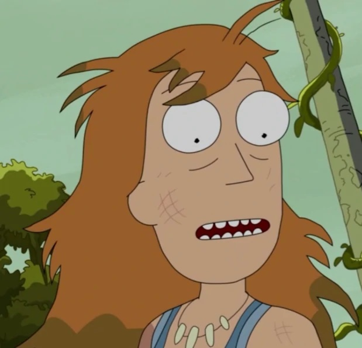
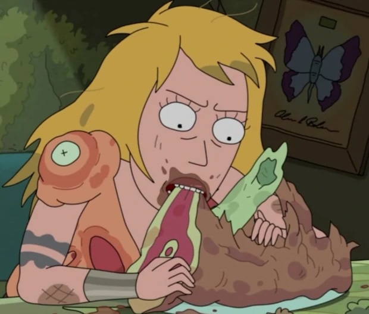
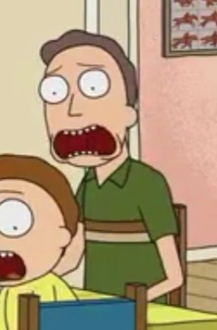

Personajes
Rick Sanchez  |
Justin Roiland |
Es un viejo científico que acostumbra a hablar de manera vulgar y entre eructos, y la mayoría de las veces tiene un rastro de saliva en la boca. Es padre de Beth Sanchez y es el abuelo materno de Summer y Morty. Es un hombre que ha pasado gran parte de su vida viajando a través de diversas galaxias. |
Morty Smith  |
Justin Roiland |
Es un chico de 14 años, nieto de Rick, quien lo usa frecuentemente en sus aventuras. Posee una inteligencia pobre, es de estatura baja para su edad y está enamorado de una compañera de escuela llamada Jessica. |
Summer Smith  |
Spencer Grammer |
Es la hermana mayor de Morty, de 17 años, una típica adolescente que suele ser superficial y obsesionada con mejorar su imagen frente a sus amigos. Es en general parecida a su madre y generalmente se la muestra como una chica lista y con sentido del humor, pero también muestras rastros de su padre como la búsqueda de aprobación. |
Beth Smith  |
Sarah Chalke |
Es la hija de Rick y a la vez madre de Morty y Summer. Al igual que su padre, bebe mucho, pero a diferencia de él, es muy seria ante las situaciones y a la vez es muy despreocupada en ocasiones. Trabaja en un hospital equino como cirujana especializada en caballos, pero muchas veces se reprocha no haber sido médico. Usualmente tiene discusiones con su esposo, habiendo una incompatibilidad entre ambos. |
Jerry Smith  |
Chris Parnell |
Es el padre de Morty y de Summer. Es una persona bastante patética; Rick lo odia por haberle quitado a su hija, es un mal padre de familia, es inseguro de sí mismo y tiene problemas en su matrimonio con Beth. Es despedido de su trabajo en la agencia de publicidad donde trabajaba por su alto nivel de incompetencia y estupidez. |